A six-week research internship at the Department of Mechanical Engineering, IIT Ropar, under Prof. Harpreet Singh. The project: planning and simulating robot toolpaths so a cold spray nozzle stays normal to a curved surface at a constant stand-off distance, and generating the robot program in KUKA's KRL language.
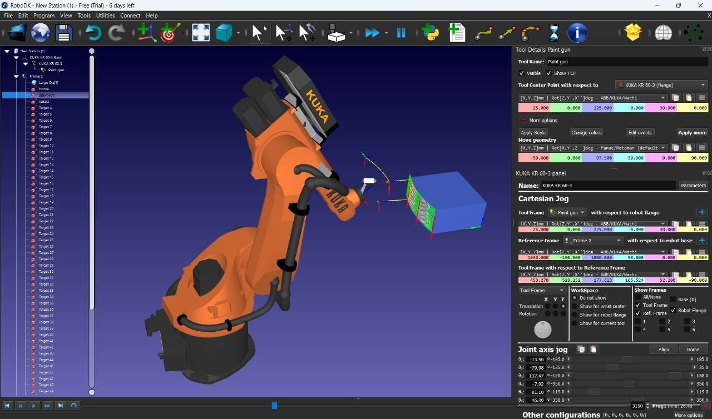
Cold spray deposits metal powder at supersonic speed without melting it, so it's used to coat and repair parts in aerospace, defence and automotive. Coating quality depends on the nozzle staying perpendicular to the surface, at a constant stand-off distance, moving with the right step-over between passes.
On a flat plate that's easy. On a curved part, the surface normal changes at every point, so the robot has to keep re-orienting the nozzle. The goal was to plan and simulate that motion offline in RoboDK before running it on the real robot.
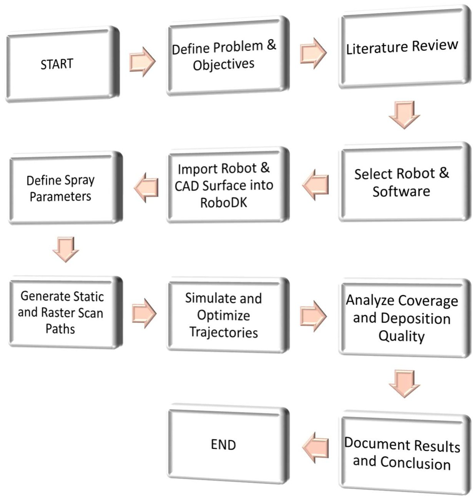
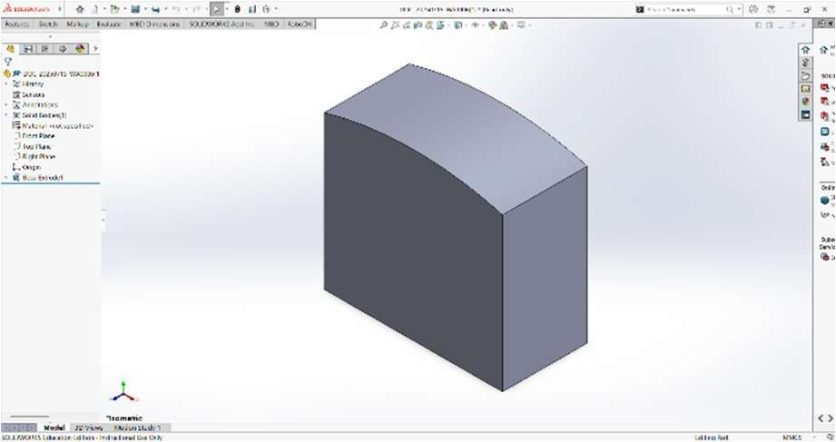
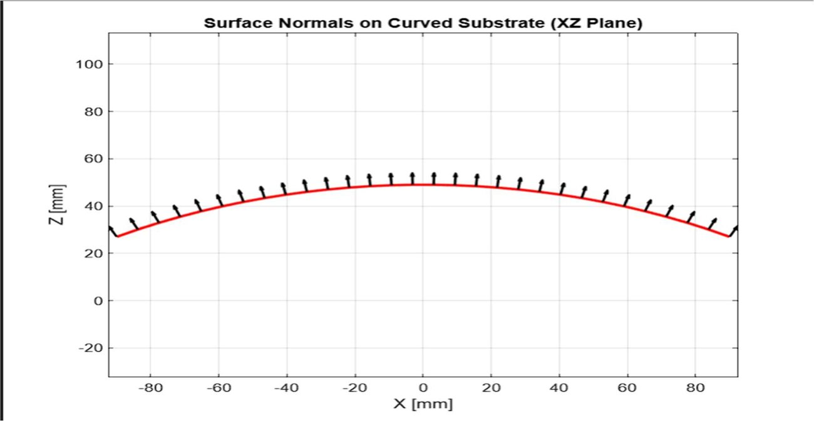
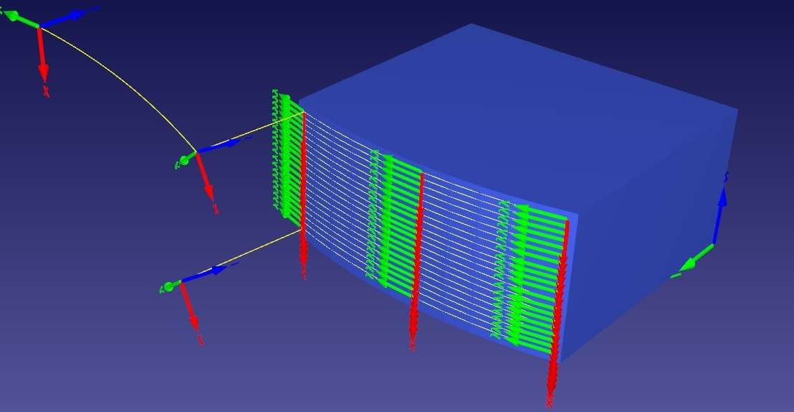
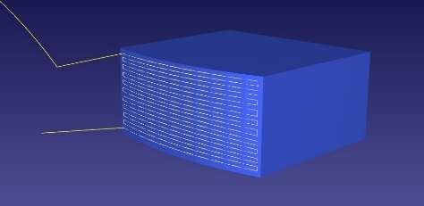
Two cases were simulated: static spray impact at fixed spray angles of 50°, 60°, 70°, 80° and 90°, and a raster scan in which the nozzle sweeps the whole surface. RoboDK was also used to check reach, singularities and collisions between the robot, nozzle and part.
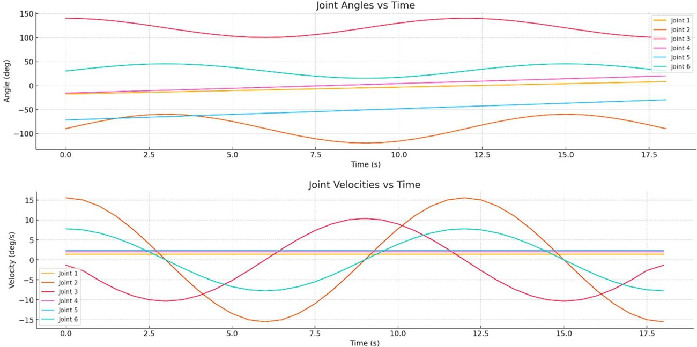
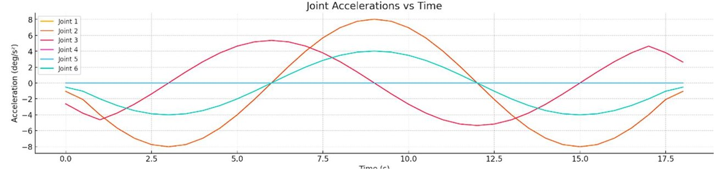
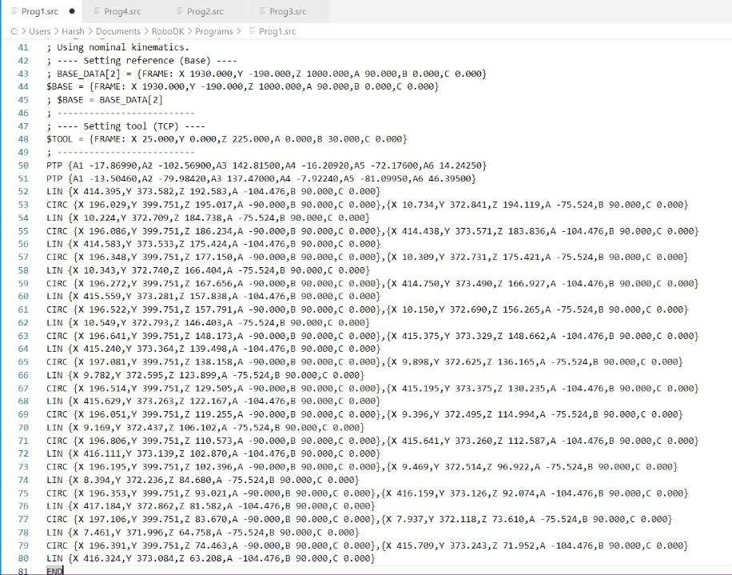
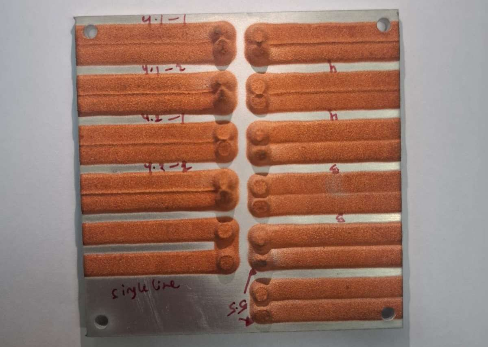
Step size, the sideways distance between neighbouring passes, decides whether the coating is uniform. Too large leaves gaps between tracks, and too small causes thick build-up where the tracks overlap.
On flat surfaces, a fixed step with about 30–50% overlap gives a uniform coat. On curved surfaces the spray angle and stand-off change along the path, so the step size has to adapt to the local curvature, with smaller steps on more strongly curved regions.
Near-normal spray angles gave the best adhesion, densest coating and most uniform build-up.
Oblique angles caused particle deflection, lower deposition efficiency and uneven thickness.
Raster scanning, with tool orientation and overlap tuned, gave more uniform coverage than static spraying.
Offline simulation let us check paths, collisions and coverage before touching the real robot, which cuts trial-and-error, saves powder and reduces machine downtime.
During the internship I also attended a five-day hands-on workshop at IIT Ropar (7–11 July 2025), held under the DST-AMT Centre of Excellence for Degradation Resistant Thermal Spray Coatings. It combined expert lectures with practical demo sessions on cold spray, laser processing and robotic coating.
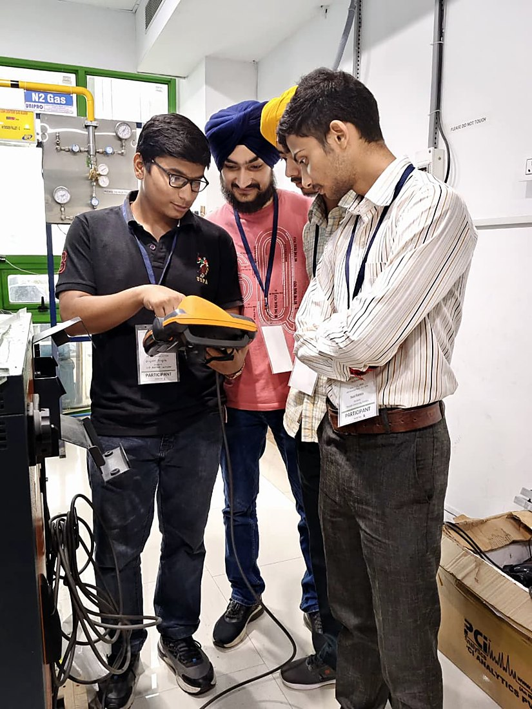
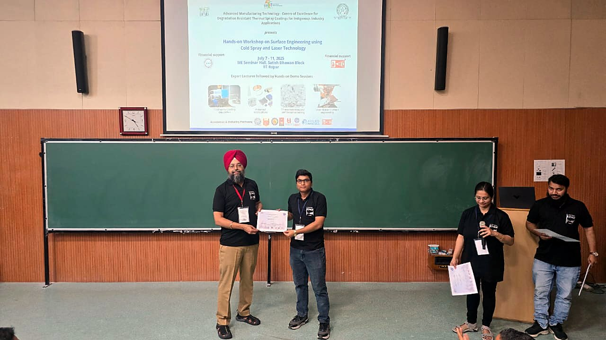
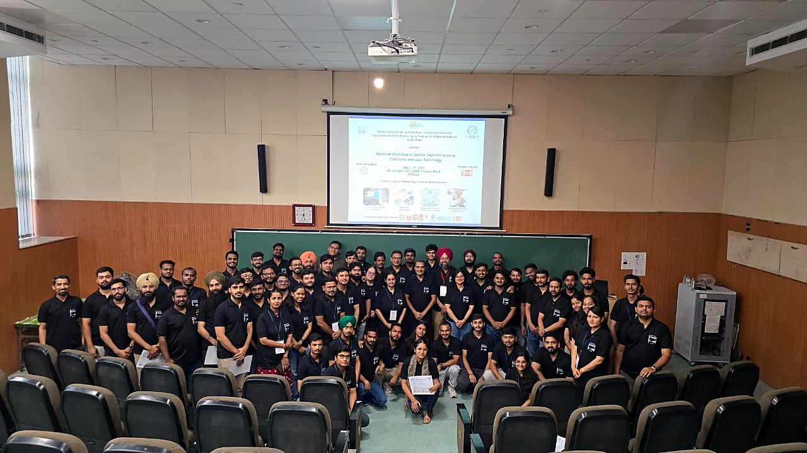
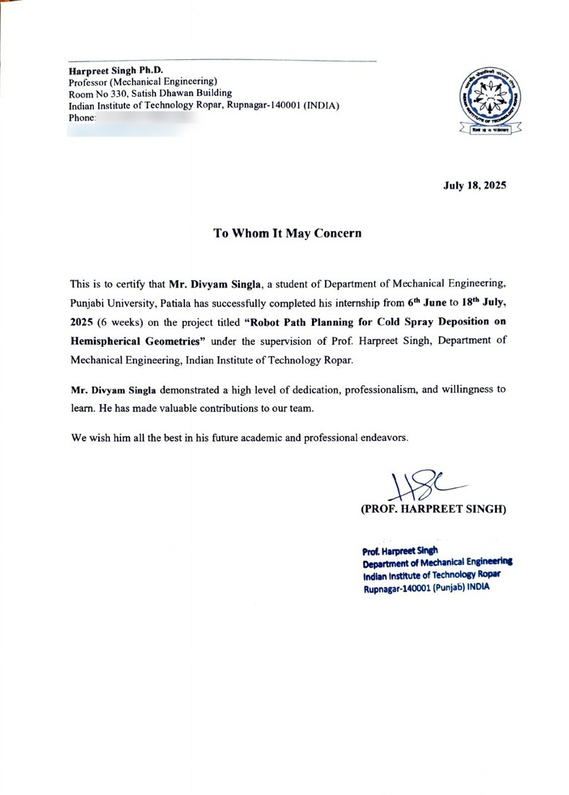
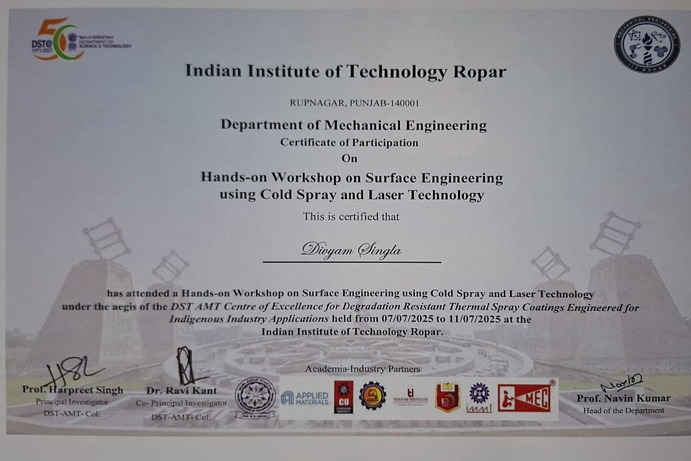